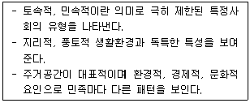
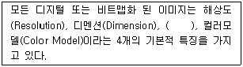
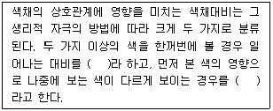
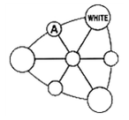
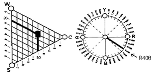
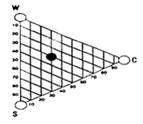

컬러리스트기사 (2014-05-25 기출문제)
1과목: 색채심리 마케팅
1. 마케팅의 핵심 개념에 해당하지 않는 것은?
- 욕구
- 시장
- 제품단
- 지위
(정답률: 88%)

2. 색채 라이프 사이클 중 회사 간의 치열한 경쟁으로 가격, 광고유치 경쟁이 치열하게 일어나는 시기는?
- 도입기
- 성장기
- 성숙기
- 쇠퇴기
(정답률: 35%)
3. 모 카드회사에서 새로 출시하는 카드를 사용하는 소비자의 소비욕구 유형에 맞추어 포인트를 올려준다고 광고를 하고 있다. 이 때 적용되는 마케팅은?
- 제품 지향적 마케팅
- 판매 지향적 마케팅
- 소비자 지향적 마케팅
- 사회 지향적 마케팅
(정답률: 85%)
4. 생후 6개월이 지난 유아가 대체적으로 선호하는 색채는?
- 고명도의 한색계열
- 저채도의 난색계열
- 고채도의 난색계열
- 저명도의 난색계열
(정답률: 83%)
5. 색채의 공감각에 대한 설명으로 틀린 것은?
- 칸딘스키는 공감각자로서 추상적 표현을 한 작가이다.
- 공감각은 자극받는 하나의 감각이 다른 감각에 적용되어 반응한다.
- 단맛은 한색계열을 연상시키며, 신맛은 노랑이나 연두를 연상시킨다.
- 색채가 지닌 감각의 특성을 활용하면 메시지와 의미를 보다 정확하고 강하게 전달할 수 있다.
(정답률: 75%)
6. 색채가 가지고 있는 상징적 특징에 대한 설명 중 틀린 것은?
- 색채는 국제적으로 이해되어 질 수 있는 시각언어로서 커뮤니케이션의 좋은 도구가 된다.
- 색채는 다양한 문화권에서 상징적인 의미를 전달하는 역할을 하고 있으며 지역에 따라 다른 상징을 가지고 있을 수 있다.
- 색채의 상징성은 지역과 문화에 관계없이 시간이 지나도 원래의 의미를 잃지 않는 특성이 있다.
- 국제적인 언어로 인지되는 색채가 사용된 좋은 예로 교통신호 등을 사례로 들 수 있다.
(정답률: 60%)
7. 마케팅의 활성화를 위하여 각기 다른 제품을 필요로 하는 독특한 구매집단으로 시장을 분류하는 것은?
- 마케팅 믹스
- 시장세분화
- 대량마케팅
- 다양화 마케팅
(정답률: 63%)
8. 국가별, 문화별로 색채 선호 및 상징은 다르게 나타난다. 다음 중 색채에 대한 문화별 차이를 설명한 사례로 적절하지 않는 것은?
- 서양의 흰색 웨딩드레스 / 한국의 소복
- 중국의 붉은 명절 장식 / 서양의 붉은 십자가
- 미국의 청바지 / 카톨릭 성화 속 성모마리아의 청색 망토
- 프랑스 황제궁의 황금 대문 / 중국 황제의 황색 옷
(정답률: 64%)
9. 종교의 색채에 대한 설명이 틀린 것은?
- 기독교에서는 그리스도의 흰 옷, 천사의 흰 옷 등을 통해 흰색을 성스로운 이미지로 표현한다.
- 이슬람교에서는 신에게 선택되어 부활할 수 있는 낙원을 상징하는 녹색을 매우 신성시한다.
- 힌두교에서는 해가 떠오르는 동쪽은 빨강, 해가 지는 서쪽은 검정으로 여긴다.
- 고대 중국에서는 천상과 지상에서 가장 경이로운 색의 하나가 검정이라 하였다.
(정답률: 30%)
10. 색채연구에서 자주 활용되는 의미분별법(SemanticDifferential Method)에서 사용되는 척도는?
- 비례척도(Radio Scale)
- 명의척도(Nominal Scale)
- 서수척도(Ordinal Scale)
- 거리척도(Interval Scale)
(정답률: 24%)
11. 색채조사를 위한 표본추출 방법에서 군집(집락, Cluster)표본 추출을 설명한 것 중 가장 옳은 것은?
- 표본을 선정하기 전에 여러 하위집단으로 분류하고 각 하위집단별로 비례적으로 표본을 선정한다.
- 모집단의 개체를 구획하는 구조를 활용하여 표본추출 대상개체의 집합으로 이용하면 표본추출의 대상명부가 단순해지며 표본추출도 단순해진다.
- 조사결과에 크게 영향을 미치는 변수를 기준으로 하위 모집단을 구분하는 것이 좋다.
- 지역적인 특성에 따른 소비자의 자동차 색채 선호 특성 등을 조사할 때 유리하다.
(정답률: 39%)
12. 표적시장 결정에 고려할 요소가 아닌 것은?
- 상품수명주기
- 기업의 자원
- 경영철학
- 경쟁사의 전략
(정답률: 67%)
13. 색채 시장조사의 자료수집 방법 중 관찰법에 대한 설명으로 틀린 것은?
- 조사의 신뢰도를 높이기 위해 소비자의 행동을 직접적으로 관찰하는 방법이다.
- 특정 지역의 유동인구를 분석하거나, 시청률이나 시간, 집중도 등을 조사하는데 적절하다.
- 특정효과를 얻거나 비교를 통한 정확한 정보를 얻고자 할 때 사용하는 방법이다.
- 특정 색채의 기호도를 조사하는데 적절하다.
(정답률: 54%)
14. 개인과 색채의 관계에 대한 용어의 설명이 틀린 것은?
- 개인이 소비하는 색과 디자인의 선택을 퍼플러 유즈(Popular Use)라고 한다.
- 개인의 기호에 따른 색이나 디자인 선택을 컨슈머 유즈(Consumer use)라고 한다.
- 개인의 일시적 호감에 따라 변하는 색채를 템포러리 플레져 컬러(Temporary Pleasure Colors)라고 한다.
- 유행색은 주기를 갖고 계속 변화하는 색으로 트렌드컬러(Trend Color)라고 한다.
(정답률: 44%)
15. 특정 제품에 대해 소비자들이 경쟁제품과 비교하여 갖게 되는 지각, 인상, 감정, 가격 등이 복합적으로 영향을 주어 형성되는 것은?
- 제품의 포지셔닝
- 제품의 생산구조
- 제품의 품질
- 제품의 유통구조
(정답률: 70%)
16. 마케팅 구성요소에 4P에 해당되지 않는 것은?
- 제품
- 유통
- 시장
- 가격
(정답률: 42%)
17. 풍토색에 대한 설명으로 틀린 것은?
- 특정지역의 기후와 토지의 색을 의미한다.
- 그 지역에 부는 바람과 내리 쬐는 태양의 빛과 흑의 색을뜻한다.
- 지리적으로 근접하거나 기후가 유사한 국가나 민족의 색채특징은 유사하다.
- 도로환경, 옥외광고물, 수목이나 산 등 그 지역의 특성을 전달하는 색채이다.
(정답률: 42%)
18. 소비자의 구매심리 과정에 해당하지 않는 것은?
- 가치(Value)
- 욕망(Desire)
- 흥미(Interest)
- 기억(Memory)
(정답률: 55%)
19. 다음 중 신용회사, 항공기 등 소비자에게 신뢰를 주는 것이 매우 중요한 기업의 로고로 사용하기에 가장 적합한 색은?
- 적색
- 흑색
- 황색
- 청색
(정답률: 75%)
20. 보기에서 설명하는 내용과 관련된 용어는?

- 에스닉 디자인
- 버네큘러 디자인
- 지역색 디자인
- 환경색채 디자인
(정답률: 36%)
2과목: 색채디자인
21. 다음 중 디자인(Design)의 어원에 가장 근접한 의미는?
- 새로움
- 변화
- 문화
- 계획
(정답률: 53%)
22. 다음 중 포스트모더니즘을 설명한 것과 거리가 먼 것은?
- 강철, 알루미늄 등의 재료, 비교적 개성이 없는 색채
- 과거의 형식을 빌려 현재의 상황으로 변형
- 복숭아색, 살구색, 올리브 그린
- 건축의 이중부호, 문학의 패러디, 미술의 알레고리
(정답률: 38%)
23. 현대 디자인사에서 형태와 기능의 관계에 대해 '형태는 기능에 따른다'라고 말한 사람은?
- 윌터 그로피우스
- 루이스 설리반
- 필립 존슨
- 프랑크 라이트
(정답률: 58%)
24. 다음 중 비례에 대한 설명으로 틀린 것은?
- 좋은 비례의 구성은 즐거운 감정을 느끼게 한다.
- 스케일과 비례 모두 상대적인 크기와 양의 개념을 표현한다.
- 주관적 질서와 실험적 근거가 명확하다.
- 파르테논 신전 등은 비례를 이용한 형태이다.
(정답률: 54%)
25. 바우하우스(Bauhaus)에 지대한 영향을 끼친 20세기 초의 미술운동이 아닌 것은?
- 초현실주의(Surrealism)
- 구성주의(Constructivism)
- 표현주의(Expressionism)
- 데스틸(De Stijl)
(정답률: 42%)
26. 다음 중 질감을 선택할 때 고려해야 할 점으로 비교적 거리가 먼 것은?
- 촉감
- 빛의 반사 흡수
- 색조
- 형상
(정답률: 39%)
27. 공간에서의 색채계획으로 적절하지 않은 것은?
- 보조색은 면적에 비례해서 5~10%를 차지한다.
- 장기체류의 공간은 색채배색이 두드러지지 않아야 한다.
- 색의 사용은 천장-벽-바닥의 순으로 어두워져야 한다.
- 디자인 분야별로 주조식의 선정방법은 다를 수 있다.
(정답률: 60%)
28. 디자인의 조건 중 독창성에 대한 설명으로 틀린 것은?
- 디자이너의 창의적인 감각에 의하여 새롭게 탄생한다.
- 부분적으로 이미 있는 디자인을 수정 보완하여 사용할 수있다.
- 대중성이나 기능보다는 차별화에 중점을 두어야 한다.
- 시대양식에서 새로운 정신을 찾아 창의력을 발휘한다.
(정답률: 50%)
29. 현대광고의 한 유형으로 광고 캠페인 전개 초기에 소비자의호기심을 불러 일으키기 위해 메시지 내용을 처음부터 전부 보여주지 않고 조금씩 단계별로 내용을 노출시키는 광고는?
- 팁온광고
- 티저광고
- 패러디광고
- 블록광고
(정답률: 70%)
30. 건축 디자인의 일반적인 프로세스는?
- 기획 → 기본계획 → 기본설계 → 실시설계 → 감리
- 기획 → 기본설계 → 조사 → 실시설계 → 감리
- 기본계획 → 조사 → 기본설계 → 실시설계 → 감리
- 조사 → 기획 → 실시설계 → 기본설계 → 감리
(정답률: 59%)
31. 다음 중 도형과 배경의 법칙이 적용된 예로 적합하지 않은 것은?
- 가구와 벽면의 관계
- 건물표면과 간판과의 관계
- 자연경관과 아파트의 관계
- 기업이미지와 상품의 관계
(정답률: 73%)
32. 다음 중 게슈탈트의 근접성(Proximity)의 원리에 대한 설명이 틀린 것은?
- 인간은 요소들끼리 서로 관계를 지어 보려는 경향이 있다.
- 형태를 구성하는 구성 요소들 간의 거리를 일컫는다.
- 개개의 요소에서 비슷한 모양의 형이나 그룹을 다함께 하나의 부류로 보는 경향이 있다.
- 형태와 명암이 다른 개별적 단위들의 통일과 조화에 적합하다.
(정답률: 20%)
33. 네덜란드에서 일어난 신조형주의 운동으로, 화면을 수평, 수직으로 분할하고 삼원색과 무채색을 이용한 구성이 특징인 디자인 사조는?
- 큐비즘
- 데스틸
- 바우하우스
- 아르데코
(정답률: 43%)
34. 다음 중 계절이나 기간 동안 많은 사람이 선호하여 작용하는색으로 일정한 기간을 두고 주기적으로 반복되는 특성을지닌 것은?
- 강조색
- 선호색
- 유행색
- 주조색
(정답률: 62%)
35. 1925년을 중심으로 후기 아르누보에서 바우하우스의 중간기에 나타난 양식은?
- 옵아트(Op Art)
- 팝아트(Pop Art)
- 아르데코(Art Deco)
- 데스틸(De Stijl)
(정답률: 59%)
36. 다음 중 입체에 대한 설명으로 틀린 것은?
- 입체의 유형 중 적극적 입체는 확실하게 지각되는 형, 현실적인 형을 말한다.
- 순수입체는 모든 입체들의 기본요소가 되는 구, 원통 육면체 등 단순한 형이다.
- 두 면과 각도를 가진 방향으로 이동하거나 면의 회전에 의해서 생긴다.
- 넓이는 있지만 두께는 없고, 원근감과 질감을 표현할 수 있다.
(정답률: 70%)
37. 디자이너는 문제를 풀어가는 과정에서 단계별로 고객에게 디자이너의 의도를 전달해야 한다. 단계별 결과에 대한 고객의 이해를 돕기 위해 주로 언어적, 시각적 방법에 의해 이루어지는 것은?
- 프로젝트관리(Project Management)
- 디자인과정(Design Process)
- 네비게이션(Navigation)
- 프리젠테이션(Presentation)
(정답률: 70%)
38. 광고가 집행되는 과정을 순서대로 나열할 것으로 옳은 것은?
- 상황분석 → 광고기본전략 → 크리에이티브 전략 → 매체전략 → 효과측정 또는 평가
- 상황분석 → 광고기본전략 → 매체전략 → 크리에이티브 전략 → 효과측정 또는 평가
- 상황분석 → 매체전략 → 광고기본전략 → 크리에이티브 전략 → 효과측정 또는 평가
- 상황분석 → 매체전략 → 크리에이티브 전략 → 광고기본전략 → 효과측정 및 평가
(정답률: 25%)
39. 패션 색채계획에 활용할 '소피스티케이티드(Sophisticated)'이미지에 대한 설명이 옳은 것은?
- 고급스럽고 우아하며 품위가 넘치는 클래식한 이미지와 완숙한 여성의 아름다움을 추구
- 현대적인 샤프함과 합리적이면서도 개성이 넘치는 이미지로 다소 차가운 느낌
- 어른스럽고 도시적이며 세련된 감각을 중요시 여기며 지성과 교양을 겸비한 전문직 여성의 패션스타일을 대표하는 이미지
- 남성정장 이미지를 여성패션에 접목시켜 격조와 품위를 유지하면서도 자립심이 강한 패션 이미지를 추구
(정답률: 62%)
40. 환경디자인의 영역에 속하지 않는 것은?
- 도시계획
- 건축디자인
- 인테리어 디자인
- 운송수단 디자인
(정답률: 37%)
3과목: 색채관리
41. 색채 관리 시스템(Color Management system)에서 PCS(Profile Connection Space)에 대한 설명 중 옳은 것은?
- Profile 체계로서 장치 독립으로 모든 기계에 동일하다.
- 모니터나 프린터 같은 영상 출력장치의 색공간을 말한다.
- 컬러장치사이의 색정보 전달을 위한 장치 독립 색공간이다.
- 컬러장치사이의 색정보 전달을 위한 장치 종속 색공간이다.
(정답률: 47%)
42. 다음 용어들 중 디스플레이의 기술과 가장 관련이 없는 것은?
- Wide Color Gamut
- CCFL BLU
- OLED
- DICOM
(정답률: 24%)
43. 다음 중 광원이 아닌 것은?
- D65
- CWF
- A
- FMC
(정답률: 46%)
44. 다음 중 연색지수에 대한 내용으로 틀린 것은?
- 연색지수는 인공광원이 얼마나 기준광과 비슷하게 물체의색을 보여주는가를 나타낸다.
- 각 광원의 연색지수는 Ra는 정해진 8가지의 샘플색에 대해시험광원 아래에서 본 경우와 기준광원 아래에서 본 경우의색의 차이로 측정된다.
- 연색지수가 80 ~ 89일 경우 2A 등급으로 표기한다.
- 연색지수를 산출하는데 기준이 되는 광원은 시험광원에 따라다르다.
(정답률: 32%)
45. 다음 중 공간과 광원이 적합하게 사용한 경우는?
- 백색광원 - 육류, 소시지 상점
- 적색광원 - 전시장, 세미나실, 학교강당
- 온백색광원 - 빵, 기타 식료품
- 주광색광원 - 옷ㆍ신발 등의 상점, 공장
(정답률: 47%)
46. 한국산업표준 인용규격에서 표준번호와 표준명의 표기가 틀린것은?
- KS A 0011 물체색의 색이름
- KS A 0062 색의 3속성에 의한 표시 방법
- KS A 0075 광원의 연색성 평가
- KS A 0074 측색용 표준광 및 표준광원
(정답률: 37%)
47. 불투명 반사물체의 색을 측정하는 조명 및 관측조건 중틀린 것은?
- 45/0
- 0/45
- d/0
- 0/c
(정답률: 38%)
48. 분광광도계의 특징으로 틀린 것은?
- 분광식 색체계의 광원은 일반적으로 텅스텐 할로겐 램프나 크세논 램프를 사용한다.
- 적외선 근처의 가시광원 영역에는 텅스턴 할로겐 램프를 주로 사용한다.
- 이중광(Double Beam) 방식은 상대적으로 측정 정밀도가 높은편이다.
- 수광기(Detector)에 있는 PM Tube는 가시광선 범위만 측정이 가능하다.
(정답률: 27%)
49. 보기의 ( )안에 들어갈 용어로 가장 적합한 것은?

- 비트 깊이(Depth)
- 색상과 명도(Hue and Lightness)
- 무아레(Moire)
- 픽셀과 레지스터(Pixel and Register)
(정답률: 10%)
50. 색채소재에 관한 설명으로 틀린 것은?
- 안료는 주로 용해되지 않고 사용된다.
- 염료는 색소의 한 종류이다.
- 도료는 주로 안료로 생산된다.
- 플라스틱은 염료로 생산된다.
(정답률: 47%)
51. 색료에 관한 설명 중 틀린 것은?
- 색료는 물이나 유지의 용해여분에 따라 염료와 안료로 나뉜다.
- 무기안료는 고대 동굴의 벽화나 도자기 유약 등에서 사용되었다.
- 투명도료는 전색제, 도막형성의 부요소, 도막조요소의 3가지성분으로 이루어진다.
- 화학염료 중 직접염료는 양모나 실크의 염색에 사용되며 세탁이나 햇빛에 강한 장점이 있다.
(정답률: 59%)
52. 지역이 다른 두 곳에서 똑같은 회사제품의 색채측정기로 동일 각, 동일 지점의 색채를 측정하였으나 측정결과가 달랐다. 다음 중 가장 의심되는 요인은?
- 측정횟수와 표준편차를 처리하는 방법의 차이
- 색채측정기를 사용한 사람의 차이
- 시료의 불균일성
- 백색기준판의 오염
(정답률: 43%)
53. 특정한 색좌표의 정확한 이해와 올바른 사용을 위해 색채측정 결과에 반드시 첨부해야 할 사항이 아닌 것은?
- 색채 측정방식
- 색채온도
- 표준광의 종류
- 표준관측자
(정답률: 37%)
54. 다음 색료에 대한 설명으로 적합하지 않은 것은?
- 안료에 반해서 염료는 사용되는 매질에 항상 불용성을 띤다.
- 안료가 잘 착색되려면 고착제를 필요로 한다.
- 이산화티탄 코팅 운모는 가장 일반적인 진주광택 및 간섭 박편 안료이다.
- 진주광택효과를 최대화하기 위해서는 높은 굴절률, 최적의 박편판 두께, 직경, 투명도, 부드러운 표면 등이 요구된다.
(정답률: 46%)
55. 어떤 색채가 매체, 주변 색, 광원, 조도 등이 다른 환경 하에서 관찰될 때 다르게 보여지는 현상은?
- 컬러 어피어런스(Color Appearance)
- 컬러 맵핑(Color Mapping)
- 컬러 변환(Color Transformation)
- 컬러 특성화(Color Characterization)
(정답률: 42%)
56. 다음 중 CII(Color Inconsistency Index)에 대한 설명이 틀린 것은?
- 광원의 변화에 따라 각 색채가 지닌 색차의 정도가 다르다.
- CII가 높을수록 안정성이 없어서 선호도가 낮다.
- 광원에 따른 색채의 불일치 정도를 나타내는 지수이다.
- CII에서는 백색의 색차가 가장 크게 느껴진다.
(정답률: 34%)
57. 다음 중 윈도우 기반 PC의 기준 Gamma는 어떤 것인가?
- 2.2
- 1.5
- 2.6
- 1.8
(정답률: 31%)
58. 다음 중 가장 최근에 발전된 색차식은?
- CIELAB 색차식
- FMC 색차식
- CIE DE 2000 색차식
- CMC 색차식
(정답률: 35%)
59. 컬러 사진의 인쇄원리와 관계가 있는 것은?
- Red, Green, Blue
- CMY 색료
- 가법혼색의 원리
- SWOP
(정답률: 62%)
60. 흑체복사에 대한 다음 설명 중 틀린 것은?
- 흑체란 외부 에너지를 반사 없이 모두 흡수하는 이론적물체이다.
- 흑체복사는 연속적인 파장분포를 나타내면서 물체의 온도가 증가할수록 더욱 넓은 영역의 분포를 나타낸다.
- 저온에서는 붉은 색을 띄다가 온도가 높아짐에 따라 점차 오렌지색, 노란색, 흰색으로 바뀐다.
- 상관온도는 흑체복사를 말한다.
(정답률: 47%)
4과목: 색채지각론
61. 물체색이 보이는 상태에 영향을 주는 광원의 성질은?
- 분광조성
- 표면성
- 채색성
- 연색성
(정답률: 42%)
62. 눈의 구조와 특성에 대한 설명이 옳은 것은?
- 간상체는 추상체에 비하여 해상도가 떨어지지만, 작은 빛에서 더 민감하다.
- 빛이 신경정보로 전환되는 부분은 맹점에 있다.
- 빛 에너지가 전기화학적인 에너지로 변환되기 위해서는 수정체의 굴절도가 중요하다.
- 망막의 주변부위에는 추상체가 훨씬 많이 분포한다.
(정답률: 알수없음)
63. 서양미술의 유명 작가와 그의 회화작품들이다. 이 중 병치혼색의 원리를 적극적으로 이용한 작품은?
- 몬드리안 - 적·청·황 구성
- 말레비치 - 8개의 정방형
- 쇠라 - 그랑자드 섬의 일요일 오후
- 피카소 - 아비뇽의 처녀들
(정답률: 67%)
64. 인간의 색지각 능력을 고려할 때, 가장 분별하기 어려운것은?
- 색상의 차이
- 채도의 차이
- 명도의 차이
- 동일함
(정답률: 28%)
65. 색상, 명도 채도 모두에서 나타나는 것으로 특히 프린트디자인이나 벽지와 같은 평면 디자인 시 배경과 그림의 관계를 고려해야 하는 현상은?
- 동화 현상
- 대비 현상
- 색의 순응
- 면적 효과
(정답률: 15%)
66. 다음 중 채도 대비에 대한 설명이 틀린 것은?
- 채도가 다른 두 색을 인접했을 때, 채도가 높은 색의 채도는 더욱 높아진다.
- 채도대비가 나타날 때 인접된 색은 서로 더욱 선명해 진다.
- 동일한 색인 경우, 고채도의 바탕에 놓았을 때 보다 저채도의 바탕에 놓았을 때 더 탁해 보인다.
- 채도대비는 3속성 중에서 대비효과가 가장 약하다.
(정답률: 46%)
67. 어떤 물건의 무게가 가볍게 보이도록 색을 조정하려 할 때 가장 적합한 방법은?
- 채도를 높인다.
- 진출색을 사용한다.
- 명도를 높인다.
- 채도를 낮춘다.
(정답률: 80%)
68. 색광의 가법혼색에 적용되는 그라스만(H. Grassmann)의 법칙이 아닌 것은?
- 빨강과 초록을 똑같은 색광으로 혼합하면 양쪽의 빛을 함유한 노란색광이 된다.
- 백색광이나 동일한 색의 빛이 증가하면 명도가 증가하는 현상이다.
- 광량에 대한 채도의 증가를 식으로 나타낸 법칙이다.
- 색광의 가법혼색 즉, 동시·계시·병치혼색의 어느 경우이든같은 법칙이 적용된다.
(정답률: 34%)
69. 다음 중 빛의 굴절(Refraction)현상을 볼 수 있는 것이 아닌것은?
- 아지랑이
- 무지개
- 별의 반짝임
- 노을
(정답률: 50%)
70. 잔상에 관한 설명으로 틀린 것은?
- 자극을 제거한 후에 시각적인 상이 나타나는 현상이다.
- 자극의 강도가 클수록 잔상의 출현도 강하게 나타난다.
- 물체색에 있어서의 잔상은 거의 원래 색상과 보색관계에 있는 보색잔상으로 나타난다.
- 원래의 자극에 대해 보색으로 나타나는 것은 양성잔상에 해당된다.
(정답률: 54%)
71. 색의 삼속성과 감정 효과의 관계에 대한 설명으로 틀린 것은?
- 색의 온도감은 색의 3속성 중에서 색상에 주로 영향을 받는다.
- 난색 계열의 고채도 색은 심리적으로 흥분감을 준다.
- 명도가 높은 색이 낮은 색보다 더 진출하는 느낌을 준다.
- 채도가 낮은 색은 강한 느낌을 주고 채도가 높은 색은 부드러운 느낌을 준다.
(정답률: 67%)
72. 가법혼색의 일반적 원리가 적용된 사례가 아닌 것은?
- 모니터
- 무대조명
- LED TV
- 색 필터
(정답률: 67%)
73. 색을 혼합할수록 밝아지는 것은 ( A )의 혼합이며, 혼합할수록 어두워지는 것은 ( B )의 혼합이라고 할 때, ( )안에 들어갈 적합한 예가 잘못 짝지어진 것은?
- A : 모니터, B : 컬러사진
- A : 컬러슬라이드, B : 그림물감
- A : 조명등, B : 컬러영화필름
- A : 무대조명, B : 인쇄잉크
(정답률: 22%)
74. 색의 감각적, 지각적 속성에 의한 분류에 관한 내용 중 틀린 것은?
- 유채색은 색의 3속성을 모두 포함하는 색이다.
- 무채색은 빛의 반사율에 의해 결정된다.
- 색상은 물체의 표면에서 선택적으로 반사되는 주파장에 의해 결정된다.
- 채도는 색의 강약을 말하며 순색에 무채색이 섞일수록 채도가 높아진다.
(정답률: 65%)
75. 컬러 TV에 응용된 병치혼색과 컬러 인쇄에 응용된 병치혼색의차이를 옳게 설명한 것은?
- 컬러 TV는 가법혼색이고, 컬러 인쇄는 감법혼색이다.
- 컬러 TV는 중간혼색이고, 컬러 인쇄는 가법혼색이다.
- 컬러 TV는 감법혼색이고, 컬러 인쇄는 중간혼색이다.
- 컬러 TV는 중간혼색이고, 컬러 인쇄는 감법혼색이다.
(정답률: 65%)
76. 색채의 지각과 감정 효과에 대한 설명이 틀린 것은?
- 난색계열의 고채도 색은 흥분감을 일으킨다.
- 일반적으로 팽창색은 후퇴색과 연관이 있다.
- 일반적으로 채도가 높은 색은 채도가 낮은 색보다 진출의 느낌이 크다.
- 중량감에 영향을 미치는 것은 명도의 차이이다.
(정답률: 83%)
77. 보기의 ( )에 들어갈 내용으로 알맞게 짝지어진 것은?

- 색상대비, 계시대비
- 동시대비, 계시대비
- 계시대비, 동시대비
- 색상대비, 동시대비
(정답률: 54%)
78. 교통표지나 광고물 등에 사용될 색을 선정할 때 하양바탕에서 가장 명시성이 높은 색은?
- 파랑
- 초록
- 빨강
- 주황
(정답률: 42%)
79. 색채의 온도감에 가장 영향이 큰 속성은?
- 채도
- 명도
- 색상
- 톤
(정답률: 64%)
80. 눈의 세포인 추상체와 간상체에 대한 다음 설명 중 옳은 것은?
- 간상체에 의한 순응이 추상체에 의한 순응보다 신속하게 발생한다.
- 간상체는 빛의 자극에 의해 빨강, 노랑, 녹색을 느낀다.
- 어두운 곳에서 추상체가 활동하는 밝기의 순응을 암순응이라고 한다.
- 간상체는 약 500nm의 빛에 가장 민감하며, 추상체 시각은 약 560nm의 빛에 가장 민감하다.
(정답률: 50%)
5과목: 색채체계론
81. 문ㆍ스펜서의 색채조화론에서 조화관계의 분류가 아닌 것은?
- 동일조화
- 유사조화
- 수직조화
- 대비조화
(정답률: 47%)
82. 10R 7/8의 일반색명은?
- 진한 빨강
- 밝은 빨강
- 갈색
- 노란 분홍
(정답률: 20%)
83. 먼셀 색입체의 특징이 아닌 것은?
- CIE 색체계와의 상호변환이 가능하다.
- 등색상면이 정삼각형의 형태를 갖는다.
- 명도가 단계별로 되어 있어 감각적인 배열이 가능하다.
- 3속성을 3차원의 좌표에 배열하여 색감각을 보는데 용이하다.
(정답률: 29%)
84. 다음 그림은 비렌의 색삼각형이다. A에 들어갈 용어는?

- TINT
- TONE
- GRAY
- SHADE
(정답률: 35%)
85. L*a*b* 색공간 읽는 법에 대한 설명으로 옳은 것은?
- L* : 명도, a* : 빨간색과 녹색방향, b* : 노란색과 파란색 방향
- L* : 명도, a* : 빨간색과 파란색방향 , b* : 노란색과 녹색방향
- L* : R(빨간색), a* : G(녹색), b* : B(파란색)
- L* : R(빨간색), a* : Y(노란색), b* : B(파란색)
(정답률: 53%)
86. 한국산업표준 수식형용사의 관계 중 틀린 것은?
- 선명한 – vivid
- 연한 - soft
- 진한 – deep
- 탁한 - dull
(정답률: 28%)
87. 음양오행설을 근간으로 하는 전통색채의 설명으로 옳은 것은?
- 청색은 동방의 정색으로 목성에 속한다.
- 오정색은 음향오행사에서 음(陰)에 해당한다.
- 간색과 간색의 혼합으로 생기는 색을 오정색이라 부른다.
- 황, 녹, 홍, 자, 벽은 오간색이다.
(정답률: 50%)
88. 관용색에 대한 설명 중 옳은 것은?
- 식물의 이름에서 유래된 것으로 카나리아색이 있다.
- 인명에서 유래된 것으로는 반다이크 브라운이 있다.
- 식물의 이름에서 유래된 것으로는 세피아 등이 있다.
- 광물에서 유래된 것으로는 라벤더 등이 있다.
(정답률: 58%)
89. 다음 중 현색계에 해당하는 것은?
- Munsell 색체계
- XYZ 색체계
- RGB 색체계
- Maxwell 색체계
(정답률: 63%)
90. 다음의 NCS 색삼각형과 색상환에서 표시하고 있는 색에 대한 설명으로 옳은 것은?

- 유채색도 50% 중 Blue는 40%의 비율이다.
- 흰색도는 20%의 비율이다.
- 뉘앙스는 5020으로 표기한다.
- 검정색도는 50%의 비율이다.
(정답률: 40%)
91. 다음 중 현색계의 장점이 아닌 것은?
- 사용이 쉬운 편이고, 측색기가 필요치 않다.
- 색편의 배열 및 개수를 용도에 맞게 조정할 수 있다.
- 조색, 검사 등에 적합한 오차를 적용할 수 있다.
- 지각적으로 일정하게 배열되어 있다.
(정답률: 40%)
92. "인접하는 색상의 배색은 자연계의 법칙에 합치하며 인간이 자연스럽게 느끼므로 가장 친숙한 색채조화를 이룬다."이와 관련된 것은?
- 루드의 색채조화론
- 저드의 색채조화론
- 비렌의 색채조화론
- 슈브롤의 색채조화론
(정답률: 38%)
93. NCS 색삼각형 중에서 각 색마다 아래의 위치가 같다면 동일한 값은?

- 하양색도(whiteness)
- 검정색도(blackness)
- 유채색도(chromaticness)
- 뉘앙스(nuance)
(정답률: 65%)
94. DIC색채에 관한 설명으로 가장 옳은 것은?
- 6도 인쇄 시스템에 잉크 배합비율의 안내서이다.
- 상용색표집으로 제작회사 제품의 활용이 목적이다.
- 일본상공회의소에서 기본 시스템으로 활용한다.
- 인간의 지각적 등보성에 다른 배열을 기본으로 한다.
(정답률: 64%)
95. 다음 중 CIE L*a*b* 색채계에서 a*에 해당되는 색의 영역으로가장 옳은 것은?
- Red ~ Blue
- Yellow ~ Blue
- Green ~ Red
- Red ~ Yellow
(정답률: 50%)
96. 다음 중 P.C.C.S 색체계에 대한 설명으로 옳은 것은?
- 일반교육 및 미술교육 등 색채교육용 표준체계로 색채관리및 조색을 과학적으로 정확히 전달하기에 적합한 색체계이다.
- R, Y, G, B, P의 5색상을 색영역의 중심으로 하고, 각 색의 심리보색을 대응시켜 10색상을 기본색상으로 한다.
- 명도의 표준은 흰색과 검은색 사이를 정량적으로 분할한다.
- 채도의 기준은 지각적 등보성이 없이 절대수치인 9단계로 모든 색을 구성하였다.
(정답률: 29%)
97. 현색계에 대한 설명 중 옳은 것은?
- 색을 측색기로 측색하여 어떤 파장의 빛을 반사 하는가에 따라 색의 특징을 판별하는 방법이다.
- 정확한 수치 개념에 입각해 색이 눈에 보이지 않아도 좌표또는 수치를 이용해 표현하는 체계이다.
- 실제 눈에 보이는 물체색과 투과색 등 눈으로 보고 비교검색할 수 있고, 색 공간에서 지각적 색 통합 또는 색스케일을 만드는 색체계이다.
- CIE 표색계가 대표적인 시스템이다.
(정답률: 62%)
98. 먼셀 색입체의 설명으로 틀린 것은?
- 수직단면은 같은 색상이 나타나므로 등색상면이라고도 한다.
- 수직단면은 유사 색상의 명도, 채도 변화를 한 눈에 볼 수 있으며, 가장 안쪽의 색이 순색이다.
- 수평으로 자르면 같은 명도의 색이 나타나므로 등명도면이라고도 한다.
- 수평단면은 동일 명도에서 채도의 차이와 색상차이를 한 눈에 알 수 있다.
(정답률: 55%)
99. 문·스펜서(Moon spencer)가 주장하는 색채조화론의 설명으로 거리가 먼 것은?
- 경험적 배색 법칙에 정량적 근거를 부여하였다.
- 심리적으로 쾌적한 배색을 실험적으로 증명하였다.
- 현색계와 혼색계의 조화, 부조화의 강도를 설명할 수 있다.
- 색채조화에 미치는 면적의 효과를 정량화하여 배색 결과의 심리적 효과를 검토할 수 있다.
(정답률: 15%)
100. CIE Yxy 색체게에서 순수파장의 색은 어디에 위치하는가?
- 불규칙적인 곳에 위치한다.
- 중심의 백색광 주변에 위치한다.
- 말발굽형의 바깥 둘레에 위치한다.
- 원형의 형태로 백색광 주변에 위치한다.
(정답률: 57%)